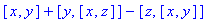

Michael B. Monagan and Greg J. Fee (1986/10)
G.J.F. (modified 1992/01)
G.J.F. and Blair F. Madore (modified 1992/05)
Douglas W. Harder (modified 2000/03)
© 2000 Waterloo Maple Inc.
Å@
Note: If you wish to permanently save this package into your library, please follow this link.
Å@
Introduction: 'Commutator' Usage in Maple 6
Definition : the commutator c(x,y)
= x &* y - y &* x where multiplication here
is non-commutative.
This package provides for manipulation and simplification of commutators, expanding
commutators in terms of &* Maple's non-commutatorive multiplication operator,
and converting an expression in terms of &* to commutator form. The following
identities are applied automatically:
c(y,x) = -c(x,y)
c(x,x) = 0 for all
x
c(k,x) = 0 for any constant
k
c(x+y,z) = c(x,y) + c(y,z)
c(k*x,y) = k*c(x,y)
for any constant k
See the constants
and type[constant]
help pages in Maple for the definition of a constant.
Procedures:
commutator
`expand/c`
`convert/c`
`simplify/c`
&*
`expand/&*`
`convert/&*`
`print/c`
`convert/listtoc`
A canonical form for commutators is obtained by applying the following two rules
given the ordering : order by number of nested commutators and break ties by
address of object.
c(y,x) ==> -c(x,y) iff x < y
c(x,c(y,z)) ==> c(y,c(x,z)) - c(z,c(x,y)) iff
x < y
In particular, this form recognizes the Jacobi identity
c(x,c(y,z)) + c(y,c(z,x)) + c(z,c(x,y)) = 0
Commutators can be expressed in terms of &* as in
> convert( c(x,(y,z)), '`&*`' );
- &*(y, z, x) - &*(x, z, y) + &*(z,
y, x) + &*(x, y, z)
Or converted back in terms of c
> convert( %, 'c' );
c(y, c(x, z)) - c(z, c(x, y))
If an `&*` expression is converted to a commutator and back to an `&*`
expression, then the original `&*` expression will be identical to the final
`&*` expression if and only if the original `&*` expression can be represented
as a commutator expression.
The procedure `print/c` displays commutators as lists, and the procedure `convert/listtoc`
converts an input list expression to commutator form. "commutat" just calls
`convert/listtoc` .
Å@
Generating the Commutator Package in Maple 6
> restart;
> Commutator := module()
option `Copyright (c) 2000 Waterloo Maple Inc. All rights reserved.`;
export init, c, commutator, `&*`;
local ConvertAmpStar, PrintC, ConvertC, ExpandAmpStar, ExpandC,
SimplifyC, LessThan, AmpStar, NondistributiveC;
init := proc()
global
`print/c`, `convert/c`, `convert/&*`, `convert/listtoc`,
`expand/&*`, `expand/c`, `simplify/c`;
`print/c` := eval( PrintC );
`convert/c` := eval( ConvertC );
convert list to c
`convert/listtoc` := eval( commutator );
`convert/&*` := eval( ConvertAmpStar );
`expand/c` := eval( ExpandC );
`expand/&*` := eval( ExpandAmpStar );
`simplify/c` := eval( SimplifyC );
end proc;
c := proc(x, y)
local r, s, t, i;
option `Copyright (c) 1992 by the University of Waterloo. All rights reserved.`;
if x = y then
0;
elif type( x, '`*`' ) then
s, t := selectremove( 'type', x, 'constant' );
s * c(t, y);
elif type( y, '`*`' ) then
s, t := selectremove( 'type', y, 'constant' );
s * c(x, t);
elif type( x, 'constant' ) or type( y, 'constant' ) then
0;
else
if type( x, '`+`' ) then
c(x, y) := map( c, x, y );
elif type( y, '`+`' ) then
c(x, y) := -map( c, y, x );
elif LessThan(y, x) then
c(x, y) := -c( y, x );
elif type( y, 'specfunc'('anything', 'c') ) and LessThan(x, op(1, y)) then
c(x, y) := c(op(1, y), c(x, op(2, y))) - c(op(2, y), c(x, op(1, y)));
else
c(x, y) := 'c'(x, y);
end if;
end if;
end proc;
commutator := proc(f)
option `Copyright (c) 1990 by the University of Waterloo. All rights reserved.`;
if type( f, ['anything', 'anything'] ) then
c( procname( f[1] ), procname( f[2] ) );
elif type( f, {'atomic', 'list'} ) then
f;
else
map( procname, f );
end if;
end proc;
`&*` := proc()
local C, CT, d, j, k, t, x;
option remember, system,
`Copyright (c) 1992 by the University of Waterloo. All rights reserved.`;
simplifications of &* -- non-commutatorive
multiplication
pull out constants and flatten nested &*'s
(associative)
if type( [args], 'list'('And'('name', 'Not'('constant'))) ) then
'`&*`'(args);
else
t := NULL;
C := 1;
for x in [args] do
if type( x, 'constant' ) then
C := C*x;
elif type( x, 'name' ) then
t := t, x;
elif type( x, '`*`' ) then
CT, d := selectremove( 'type', x, 'constant' );
C := C*CT;
if type( d, 'specfunc'('anything', '`&*`') ) then
t := t, op(d);
else
t := t, d;
end if;
elif type( x, 'specfunc'('anything', '`&*`') ) then
t := t, op(x);
else
t := t, x;
end if;
end do;
if t = NULL then
C;
elif nops([t]) = 1 then
C * t;
else
C * '`&*`'( t );
end if;
end if;
end proc;
Printing Routines
PrintC := proc(x, y)
option `Copyright (c) 1997 by Waterloo Maple Inc. All rights reserved.`;
This used to be [x, y], which causes a problem
since [a, b] + [a, c] now automatically simplifies to [2a, b+c], which is incorrect
'VECTOR'( [x, y] );
end;
Conversion Routines
ConvertAmpStar := proc(f)
local x, y;
recursively apply the rule c(x, y) ==> x
&* y - y &* x
option `Copyright (c) 1992 by the University of Waterloo. All rights reserved.`;
if type( f, 'ratpoly' ) then
f;
elif type( f, 'specfunc'('anything', 'c') ) then
x := convert( op( 1, f ), '`&*`' );
y := convert( op( 2, f ), '`&*`' );
x &* y - y &* x
elif type( f, 'atomic' ) then
f;
else
map( procname, f );
end if;
end proc;
ConvertC := proc(f)
local k, n, t;
express f (sum of products &* of symbols)
in commutator form
caveats: if f cannot be expressed in commutator
form, the result is erroneous
option `Copyright (c) 1992 by the University of Waterloo. All rights reserved.`;
if type( f, 'specfunc'('anything', '`&*`') ) then
n := nops(f);
t := c( op(n-1, f), op(n, f) );
for k from n-2 by -1 to 1 do
t := c(op(k, f), t);
end do;
t / n;
elif type( f, {'`*`', '`+`'} ) then
map( procname, f );
else
f;
end if;
end proc;
Expansion Routines
ExpandC := proc(x,y)
local a, b;
option `Copyright (c) 1992 by the University of Waterloo. All rights reserved.`;
a := expand(x);
b := expand(y);
if type( a, '`+`' ) then
expand( map( c, 'a', 'b' ) );
elif type( b, '`+`' ) then
-map( c, 'b', 'a' );
else
c( a, b );
end if;
end proc;
ExpandAmpStar := proc(x, y)
local a, b, i, j, k, s, t, z;
expand out x &* y &* ... as a sum of
products
option `Copyright (c) 1992 by the University of Waterloo. All rights reserved.`;
if type( [args], 'list'('name') ) then
'`&*`'(args);
else
a := expand( x );
if nargs = 2 then
b := expand(y);
elif nargs > 2 then
b := expand( `&*`(args[2..nargs]) );
end if;
a := `if`( type( a, '`+`' ), [op(a)], [a] );
b := `if`( type( b, '`+`' ), [op(b)], [b] );
add( add( i &* j, j=b ), i=a );
end if;
end proc;
Simplification Routines
SimplifyC := proc()
local cs, i, j, k, n, f, r, s, t, x, II;
simplify: 1. c(x,y) + c(x,z) ==> c(x,y+z)
2. c(x,z) + c(y,z) ==> c(x+y,z)
option `Copyright (c) 1992 by the University of Waterloo. All rights reserved.`;
f := args[1];
if type( f, 'ratpoly' ) then
f;
elif not type( f, '`+`' ) then
map( procname, f );
else
f := subs( c = NondistributiveC, f );
cs := proc()
local f;
option `Copyright (c) 1992 by the University of Waterloo. All rights reserved.`;
if type( args[1], '`+`' ) then
f := {op(args[1])};
else
f := {args[1]};
end if;
f := map( proc(f)
if type( f, '`*`' ) then
op(f);
else
f;
end if
end proc, f );
map( proc(f)
if type( f, 'specfunc'('anything', 'NondistributiveC' ) ) then
f
end if;
end proc, f );
end proc;
Apply to f the rule a c(x,z) + b c(y,z) ==>
c(a x + b y, z)
s := [coeffs( f, cs(f), 't' )];
t := [t];
r := table();
f := 0;
n := nops(s);
for i to n do
x := t[i];
if t[i] = 1 then
f := s[i];
next;
else
x := op(2,x);
end if;
if assigned(r[x]) then
next;
else
r[x] := s[i] * op(1,t[i]);
end if;
for j from i+1 to n do
if x = op(2,t[j]) then
r[x] := r[x] + s[j]*op(1,t[j])
end if;
end do;
end do;
II := map( op, [indices(r)] );
f := f + add( NondistributiveC(r[k],k), k=II );
Now apply to f the rule a c(x,y) + b c(x,z)
==> c(x, a y + b z)
s := [coeffs( f, cs(f), 't' )];
t := [t];
r := table();
f := 0;
n := nops(s);
for i to n do
x := t[i];
if t[i] = 1 then
f := s[i];
next;
else
x := op(1,x);
end if;
if assigned(r[x]) then
next;
else
r[x] := s[i] * op(2,t[i]);
end if;
for j from i+1 to n do
if x = op(1,t[j]) then
r[x] := r[x] + s[j] * op(2,t[j]);
end if;
end do;
end do;
II := map( op, [indices(r)] );
f := f + add( NondistributiveC(k, r[k]), k=II );
subs( NondistributiveC = c, f );
end if;
end proc;
Internal Helper Routines
NondistributiveC := proc(x,y)
local s, t, i;
option remember, system, `Copyright (c) 1992 by the University of Waterloo.
All rights reserved.`;
not to distribute over +
if x = y then
0;
elif type( x, '`*`' ) then
s, t := selectremove( 'type', x, 'constant' );
s * procname( t, y );
elif type( y, '`*`' ) then
s, t := selectremove( 'type', y, 'constant' );
s * procname( x, t );
elif type( x, 'constant' ) or type( y, 'constant' ) then
0;
elif LessThan(y,x) then
-procname( y, x );
else
'procname'( x, y );
end if;
end proc;
LessThan := proc(x, y)
local s, t, commutator;
ordering for commutators:
of nested commutators (ties broken by address)
option `Copyright (c) 1992 by the University of Waterloo. All rights reserved.`;
s := length( subs( c = commutator, x ) ) - length(x);
t := length( subs( c = commutator, y ) ) - length(y);
if s < t then
true;
elif s > t then
false;
else
addressof(x) < addressof(y);
end if;
end proc;
end module:
Saving 'Commutator' Into Your Own Library
In order to permanently save this into your own library, check libname to ensure that it is appropriately defined and remove the comment on the next line then execute the worksheet (from the menu, choose Edit->Execute->Worksheet ). Note, if you don't have write permissions on the library this command will result in an error so it may be necessary to set up another library in one of your own directories using the march command and adding the statement libname := libname, <new library directory>; to your personal initialization file.
> #savelib( 'Commutator' ):
Examples from the Help Page:
> with(Commutator);
> c(x,y+c(y,z));

> (a + b) &* (r + s);
> expand(%);
> constants := constants, k, l;
> (a*l*b) &* (r+s)/k;
> c(4*l*g, h) - c(-2*a, k*l*g);
> [x+z, x+y];
> commutator(%);